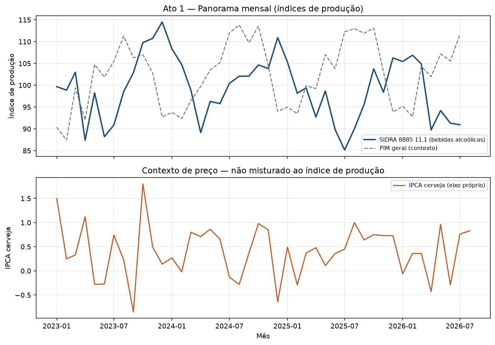
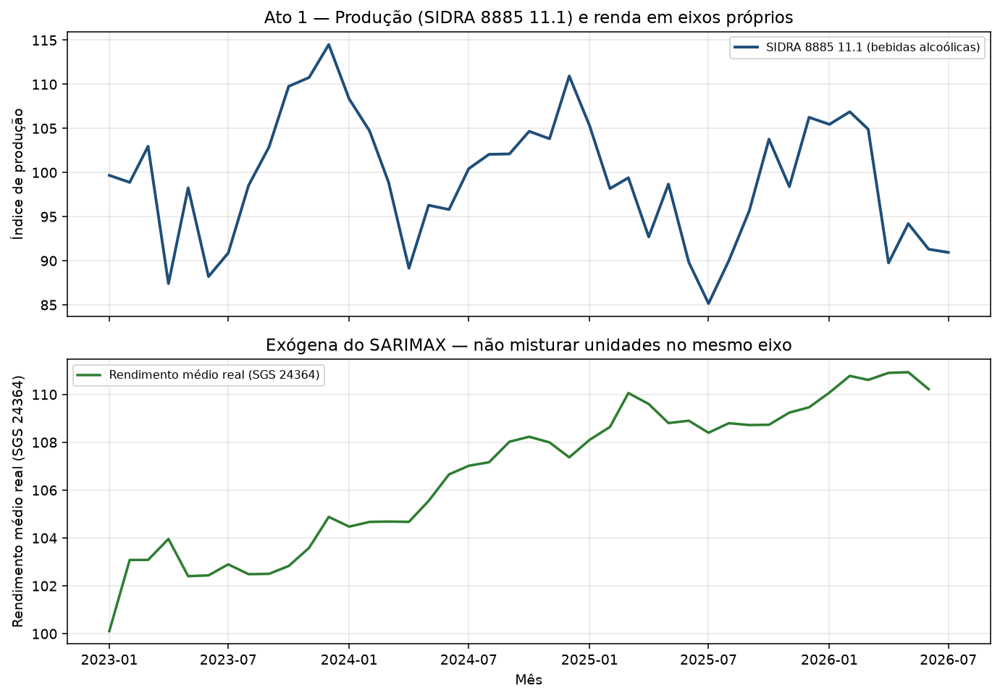
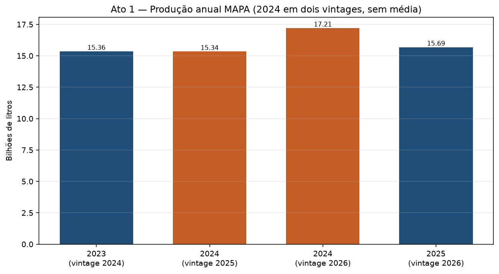
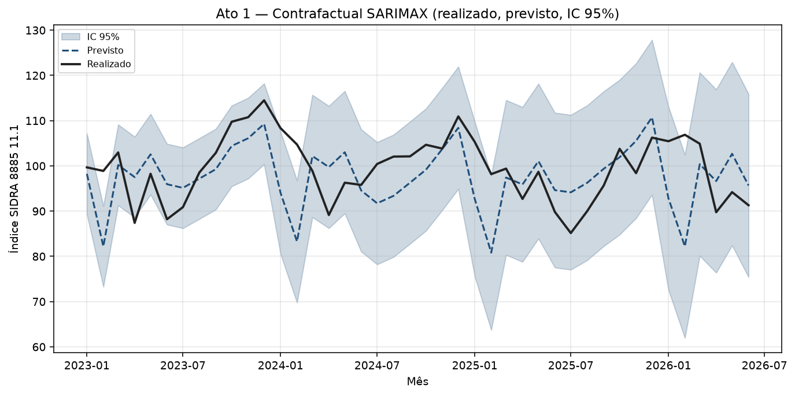
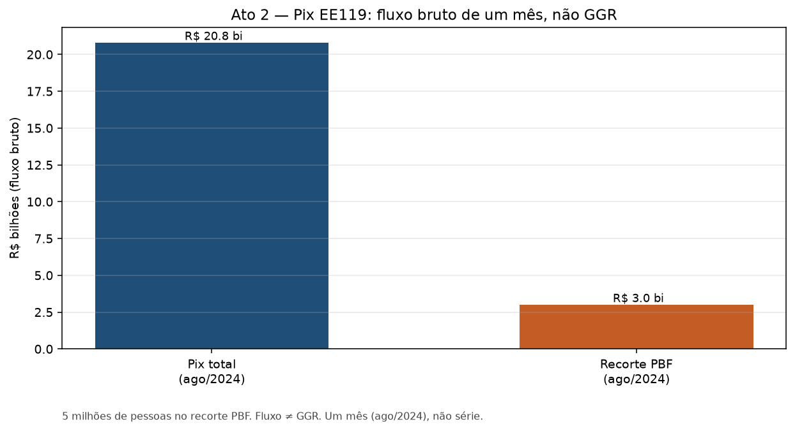
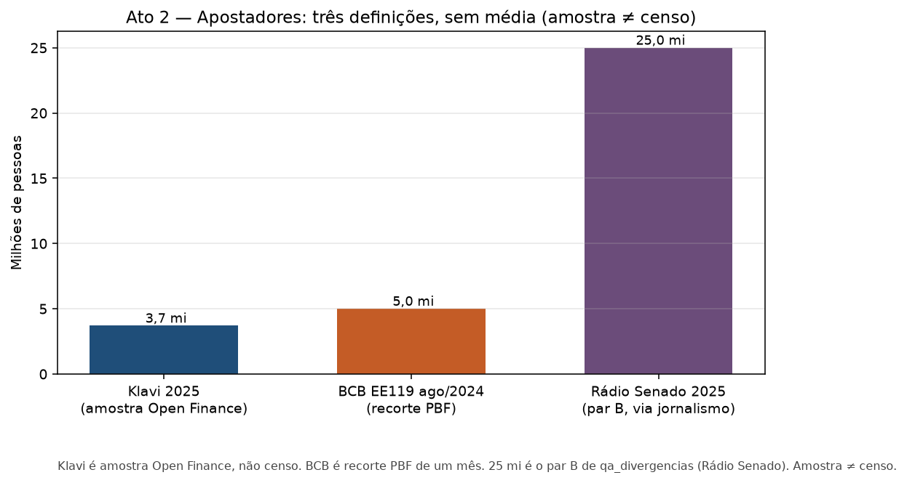
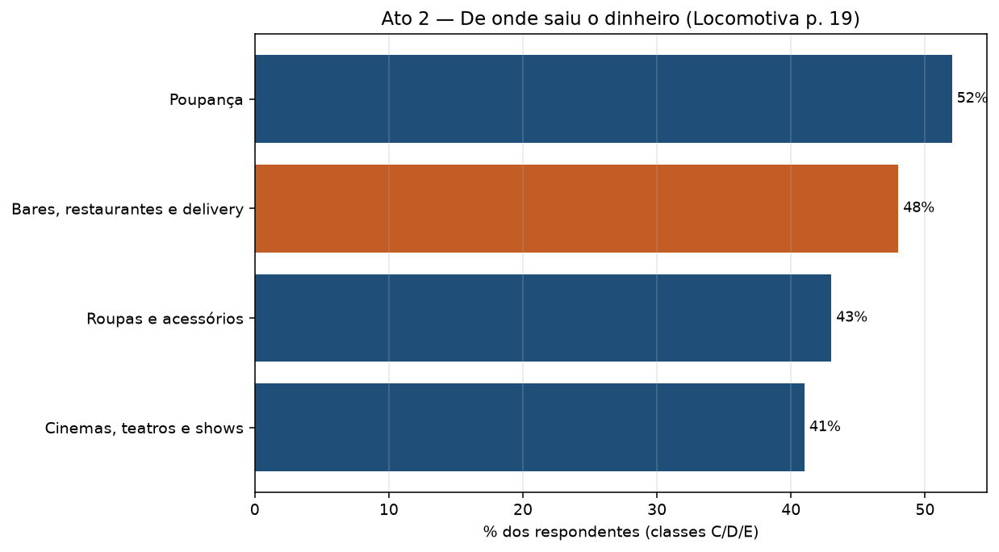
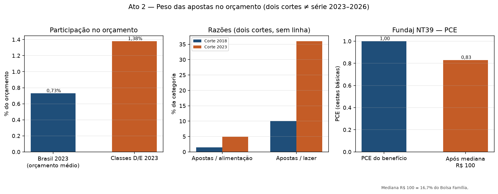
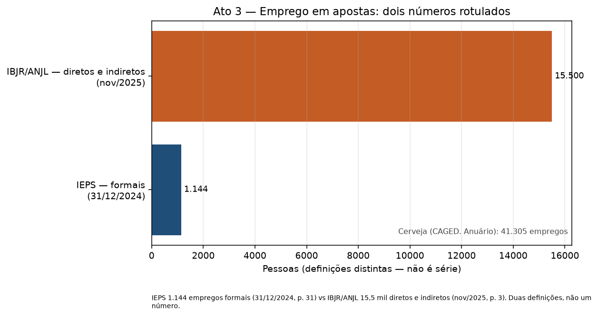

Geradas a partir do DuckDB. Mix de produto (sem álcool / puro malte) não entra no gráfico. Sem JavaScript de charting. Catálogo dbt continua no GitHub Pages.









agg_indicadores_declarados)| source_id | vintage_publicacao | metrica_id | data_inicio | geografia_id | recorte_id | pagina | citacao_textual | valor | unidade | granularidade_periodo |
|---|---|---|---|---|---|---|---|---|---|---|
| bcb_ee119_apostas_2024 | 2024 | fluxo_bruto_apostado | 2024-08-01 | pais|BR | 7d010443693eec253a121e2aa2ba177c | 2 | 56 empresas que somaram, em agosto, R$ 20,8 bilhões de transferências recebidas. | 20800000000.0 | brl | mes |
| bcb_ee119_apostas_2024 | 2024 | fluxo_bruto_apostado | 2024-08-01 | pais|BR | 3710d55192d68b63966f62bd00b5a896 | 2 | 5 milhões de pessoas pertencentes a famílias beneficiárias do Bolsa Família (PBF) enviaram R$ 3 bilhões às empresas de aposta | 3000000000.0 | brl | mes |
| bcb_ee119_apostas_2024 | 2024 | apostadores | 2024-08-01 | pais|BR | 3710d55192d68b63966f62bd00b5a896 | 2 | estima-se que, em agosto de 2024, 5 milhões de pessoas pertencentes a famílias beneficiárias do Bolsa Família (PBF) | 5000000.0 | pessoas | mes |
| web_valor_klavi_apostadores_2026 | 2026 | apostadores | 2025-01-01 | pais|BR | 251fe90119f26bf412e637a26e7a0096 | O número de apostadores brasileiros chegou a 3,7 milhões em 2025, o dobro do ano anterior. Os dados são da klavi | 3700000.0 | pessoas | mes | |
| ieps_dossie_bets_saude | 2025 | empregos_setor_apostas | 2024-12-01 | pais|BR | 7d010443693eec253a121e2aa2ba177c | 31 | havia apenas 1.144 empregos formais ativos em 31/12/2024 com 60 empregadores formais. | 1144.0 | pessoas | mes |
| lca_ibjr_anjl_panorama_apostas_2025 | 2025 | empregos_setor_apostas | 2025-11-01 | pais|BR | 7d010443693eec253a121e2aa2ba177c | 3 | 15,5 mil dos vínculos são de empregos diretos e indiretos | 15500.0 | pessoas | mes |
| anuario_cerveja_ref2025_pub2026 | 2026 | empregos_setor_cerveja | 2025-01-01 | pais|BR | 7d010443693eec253a121e2aa2ba177c | 45 | Fabricação de Cerveja e Chopes 41.305 (-2.72%). Somente os dados oficiais do governo federal em relação aos empregos diretos. | 41305.0 | pessoas | mes |
| strategy_impacto_apostas_consumo_2024 | 2024 | participacao_orcamento_apostas | 2023-01-01 | pais|BR | 7d010443693eec253a121e2aa2ba177c | 5 | No orçamento médio familiar, elas representavam 0,73% em 2023 | 0.73 | percentual | mes |
| strategy_impacto_apostas_consumo_2024 | 2024 | participacao_orcamento_apostas | 2023-01-01 | pais|BR | 956af85b830c6a15f0f0e2a6c29a6c8b | 5 | As apostas já representam 1,38% do orçamento familiar nas classes D/E | 1.38 | percentual | mes |
| strategy_impacto_apostas_consumo_2024 | 2024 | razao_apostas_alimentacao | 2018-01-01 | pais|BR | 7d010443693eec253a121e2aa2ba177c | 5 | 4,9% do que é gasto em alimentação (1,5% em 2018) | 1.5 | percentual | mes |
| strategy_impacto_apostas_consumo_2024 | 2024 | razao_apostas_alimentacao | 2023-01-01 | pais|BR | 7d010443693eec253a121e2aa2ba177c | 5 | 4,9% do que é gasto em alimentação (1,5% em 2018) | 4.9 | percentual | mes |
| strategy_impacto_apostas_consumo_2024 | 2024 | razao_apostas_lazer | 2018-01-01 | pais|BR | 7d010443693eec253a121e2aa2ba177c | 5 | 36% em lazer e cultura (10% em 2018) | 10.0 | percentual | mes |
| strategy_impacto_apostas_consumo_2024 | 2024 | razao_apostas_lazer | 2023-01-01 | pais|BR | 7d010443693eec253a121e2aa2ba177c | 5 | 36% em lazer e cultura (10% em 2018) | 36.0 | percentual | mes |
| fundaj_nt39_pce_2024 | 2024 | participacao_orcamento_apostas | 2024-08-01 | pais|BR | 3710d55192d68b63966f62bd00b5a896 | 4 | já comprometeria 16,7% do valor do benefício, reduzindo seu PCE de 1,0 para aproximadamente 0,83 | 16.7 | percentual | mes |
| fundaj_nt39_pce_2024 | 2024 | pce_bolsa_familia | 2024-08-01 | pais|BR | 3710d55192d68b63966f62bd00b5a896 | 4 | já comprometeria 16,7% do valor do benefício, reduzindo seu PCE de 1,0 para aproximadamente 0,83 | 1.0 | indice | mes |
| fundaj_nt39_pce_2024 | 2024 | pce_bolsa_familia | 2024-08-01 | pais|BR | d181374fdf5e02a765fd834e4eb01f67 | 4 | já comprometeria 16,7% do valor do benefício, reduzindo seu PCE de 1,0 para aproximadamente 0,83 | 0.83 | indice | mes |
qa_divergencias)| metrica_id | ano_referencia | data_inicio | source_id_a | vintage_a | valor_a | unidade_a | source_id_b | vintage_b | valor_b | unidade_b | tipo_divergencia | nota |
|---|---|---|---|---|---|---|---|---|---|---|---|---|
| producao_cerveja_litros | 2024 | 2024-01-01 | anuario_cerveja_ref2024_pub2025 | 2025 | 15344065267.36 | litro | anuario_cerveja_ref2025_pub2026 | 2026 | 17210754610.75 | litro | vintage | Produção 2024 original (pub 2025 p. 51) vs retificada (pub 2026 p. 51). Sinal da variação de 2025 depende do vintage. |
| empregos_setor_apostas | 2025 | 2025-01-01 | ieps_dossie_bets_saude | 2025 | 1144.0 | pessoas | lca_ibjr_anjl_panorama_apostas_2025 | 2025 | 15500.0 | pessoas | definicao | IEPS 1.144 empregos formais (31/12/2024, p. 31) vs IBJR/ANJL 15,5 mil diretos e indiretos (nov/2025, p. 3). Duas definições, não um número. |
| exportacao_cerveja | 2021 | 2021-01-01 | anuario_cerveja_ref2021_pub2022 | 2022 | 241116776.0 | kg | anuario_cerveja_ref2023_pub2024 | 2024 | 222708126.0 | litro | unidade | Mesmo ano 2021: 241.116.776 kg (Anuário pub 2022 p. 25 Tabela 6) vs 222.708.126 L reexpressos (pub 2024 p. 26 Tabela 5), com inclusão de sem álcool. Quebra kg→L; não é série do Ato 1. |
| cerveja_sem_alcool_litros | 2024 | 2024-01-01 | anuario_cerveja_ref2024_pub2025 | 2025 | 757444322.53 | litro | web_istoe_sem_alcool | 2024 | 702000000.0 | litro | definicao | MAPA pub 2025 p. 55: produção declarada 757.444.322,53 L. Euromonitor via IstoÉ: 702 milhões de litros vendidos em 2024. Produção ≠ venda; não emendar. |
| apostadores | 2025 | 2025-01-01 | web_valor_klavi_apostadores_2026 | 2026 | 3700000.0 | pessoas | web_senado_mercado_global_bets_2026 | 2026 | 25000000.0 | pessoas | amostra_vs_universo | Klavi 3,7 milhões em 2025 (amostra Open Finance, não censo) vs governo/LAI 25 milhões de apostadores ativos via Rádio Senado. Não tratar como total nacional único. |
| fluxo_bruto_apostado | 2025 | 2024-08-01 | bcb_ee119_apostas_2024 | 2024 | 20800000000.0 | brl | web_senado_mercado_global_bets_2026 | 2026 | 4100000000.0 | usd | fluxo_vs_receita | EE119 Pix ago/2024 R$ 20,8 bi (fluxo bruto, um mês) vs Regulus Partners US$ 4,1 bi de faturamento 2025 via Rádio Senado. Não é GGR SPA. |